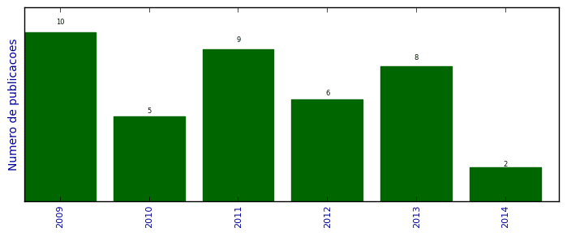

UFSM - Análise do Lattes
Artigos completos publicados em periódicos

Número total de itens: 40
(A1: 1, A2: 7, B1: 2, B2: 3, B3: 0, B4: 3, B5: 0, C: 0, Qualis não identificado: 24)
Legenda Qualis:
- Publicação para a qual o nome exato do Qualis foi identificado: Qualis <estrato>
- Publicação para a qual um nome similar (não exato) do Qualis foi identificado: Qualis <estrato> (nome similar)
- Publicação para a qual nenhum nome do Qualis foi identificado: Qualis não identificado (nome usado na busca)
2014
| 1. | LARA, IVI VALENTINI ; ZANELLA, IVANA ; FAGAN, SOLANGE BINOTTO. Functionalization of carbon nanotube by carboxyl group under radial deformation. Chemical Physics (Print). v. 428, p. 117-120, 2014.  [ citações Google Scholar | citações Microsoft Acadêmico | busca Google ] Qualis: B2 |
| 2. | MACHADO DE MENEZES, VIVIAN ; MOTA, Ronaldo ; ZANELLA, IVANA ; FAGAN, SOLANGE BINOTTO. Pristine and functionalized capped carbon nanotubes under electric fields. Physica Status Solidi. B, Basic Research. v. 251, p. 649-654, 2014. [ citações Google Scholar | citações Microsoft Acadêmico | busca Google ] Qualis: Não identificado (Physica Status Solidi. B, Basic Research) |
2013
| 1. | BEVILAQUA, R. ; CAVA, C. ; ZANELLA, I. ; SALVATIERRA, R. ; ZARBIN, A. J. G. ; ROMAN, L. ; FAGAN, S. B.. Interactions of iron oxide-filled carbon nanotubes with gas molecules. Physical Chemistry Chemical Physics. v. 15, p. 14340-14346, 2013. [ citações Google Scholar | citações Microsoft Acadêmico | busca Google ] Qualis: Não identificado (Physical Chemistry Chemical Physics) |
| 2. | FIGUEIREDO, J. ; SANTOS, C. L. ; FAGAN, S. B. ; ZANELLA, I.. Interação da ciclodextrina com ácido acetilsalicílico: um estudo de primeiros princípios. Disciplinarum Scientia. Série Ciências Naturais e Tecnológicas. v. 14, p. 139-147, 2013. [ citações Google Scholar | citações Microsoft Acadêmico | busca Google ] Qualis: Não identificado (Disciplinarum Scientia. Série Ciências Naturais e Tecnológicas) |
| 3. | PIRES, R. O. ; FAGAN, S. B. ; RAFFIN, R.. Modelagem matemática de perfis de liberação de fármacos a partir de nanocarreadores. Disciplinarum Scientia. Série Ciências Naturais e Tecnológicas. v. 14, p. 99-107, 2013. [ citações Google Scholar | citações Microsoft Acadêmico | busca Google ] Qualis: Não identificado (Disciplinarum Scientia. Série Ciências Naturais e Tecnológicas) |
| 4. | SANTOS, M. A. P. ; MARTINS, M. ; ZANELLA, I. ; FAGAN, S. B.. TICL3 E TICL4 adsorvido em grafeno via modelagem molecular. Disciplinarum Scientia. Série Ciências Naturais e Tecnológicas. v. 14, p. 149-155, 2013. [ citações Google Scholar | citações Microsoft Acadêmico | busca Google ] Qualis: Não identificado (Disciplinarum Scientia. Série Ciências Naturais e Tecnológicas) |
| 5. | TONEL, M. Z. ; ROSSATO, J. ; FAGAN, S. B. ; ZANELLA, I.. ESTUDO AB INITIO DAS PROPRIEDADES ESTRUTURAIS ELETRÔNICAS E MAGNÉTICAS DO GRAFENO CARBOXILADO. Disciplinarum Scientia. Série Ciências Naturais e Tecnológicas. v. 14, p. 131-138, 2013. [ citações Google Scholar | citações Microsoft Acadêmico | busca Google ] Qualis: Não identificado (Disciplinarum Scientia. Série Ciências Naturais e Tecnológicas) |
| 6. | TONEL, M. Z. ; ROSSATO, J. ; ZANELLA, I. ; FAGAN, S. B.. Estudo ab initio das propriedades estruturais eletrônicas e magnéticas do grafeno carboxilado. Disciplinarum Scientia. Série Ciências Naturais e Tecnológicas. v. 14, p. 131-137, 2013. [ citações Google Scholar | citações Microsoft Acadêmico | busca Google ] Qualis: Não identificado (Disciplinarum Scientia. Série Ciências Naturais e Tecnológicas) |
| 7. | TONETTO, B. ; MARTINS, M. ; FAGAN, S. B. ; ZANELLA, I.. Glifosato adsorvido em nanotubos de carbono via modelagem molecular. Disciplinarum Scientia. Série Ciências Naturais e Tecnológicas. v. 14, p. 15-22, 2013. [ citações Google Scholar | citações Microsoft Acadêmico | busca Google ] Qualis: Não identificado (Disciplinarum Scientia. Série Ciências Naturais e Tecnológicas) |
| 8. | VENDRAME, L. ; MICHELON, E. ; Zanella, I ; FAGAN, S. B. ; R. Mota. First principles simulations of zidovudine (AZT) molecules interacting with carbon nanostructures. Journal of Computational and Theoretical Nanoscience. v. 10, p. 313-317, 2013. [ citações Google Scholar | citações Microsoft Acadêmico | busca Google ] Qualis: B4 |
2012
| 1. | BISOGNIN, E. ; ZANELLA, I. ; FAGAN, S. B. ; BISOGNIN, V.. Ensino e Aprendizagem de Conceitos Matemáticos Relacionados à Nanociência por meio da Modelagem Matemática. Acta Scientiae (ULBRA). v. 14, p. 200-214, 2012. [ citações Google Scholar | citações Microsoft Acadêmico | busca Google ] Qualis: Não identificado (Acta Scientiae (ULBRA)) |
| 2. | CADORE, A. ; ZANELLA, I. ; Menezes, V ; ROSSATO, J. ; MOTA, Ronaldo ; FAGAN, S. B.. Metal-doped carbon nanotubes interacting with vitamin C. PCCP. Physical Chemistry Chemical Physics (Print). v. 14, p. 16737-16744, 2012. [ citações Google Scholar | citações Microsoft Acadêmico | busca Google ] Qualis: B2 (Chemical Physics (Print)) |
| 3. | Ellwanger, Anderson ; ROSSATO, J. ; GRANADA, M. A. ; BORTOLUZZI, V. ; FAGAN, S. B.. O Ensino de Nanociências por meio de Objetos de Aprendizagem. RENOTE. Revista Novas Tecnologias na Educação. v. 10, p. 1-10, 2012. [ citações Google Scholar | citações Microsoft Acadêmico | busca Google ] Qualis: Não identificado (RENOTE. Revista Novas Tecnologias na Educação) |
| 4. | MACHADO, Fernando Machado ; BERGMANN, C. P. ; LIMA, E. C. ; ROYER, B. ; SOUZA, F. ; JAURIS, I. ; CALVETE, T. ; FAGAN, S. B.. Adsorption of Reactive Blue 4 dye from water solutions by carbon nanotubes: experiment and theory. PCCP. Physical Chemistry Chemical Physics (Print). v. 14, p. 11139-11153, 2012. [ citações Google Scholar | citações Microsoft Acadêmico | busca Google ] Qualis: B2 (Chemical Physics (Print)) |
| 5. | Menezes, V ; MICHELON, E. ; ROSSATO, J. ; I. Zanella ; FAGAN, S. B.. Carbon nanostructures interacting with vitamins A, B3 and C: Ab Initio Simulation. Journal of Biomedical Nanotechnology. v. 8, p. 345-349, 2012. [ citações Google Scholar | citações Microsoft Acadêmico | busca Google ] Qualis: A2 |
| 6. | RAFFIN, R. ; OLIVEIRA, A. L. ; LORENZONI, R. ; ANTONOW, M. ; ANDRADE, C. T. ; ALVES, Marta Palma ; FAGAN, S. B.. Natural lipid nanoparticles containing nimesulide: synthesis, characterization and in vivo anti-inflammatory and antinociceptive activities. Journal of Biomedical Nanotechnology. v. 8, p. 309-315, 2012. [ citações Google Scholar | citações Microsoft Acadêmico | busca Google ] Qualis: A2 |
2011
| 1. | Bergoli, R ; MOTA, Ronaldo ; I. Zanella ; SILVA, Leandro Barros da ; FAGAN, S. B.. Selenium Nanostructures Adsorbed on Carbon Nanotubes: a DFT Investigation. Journal of Computational and Theoretical Nanoscience. v. 8, p. 1710-1715, 2011. [ citações Google Scholar | citações Microsoft Acadêmico | busca Google ] Qualis: B4 |
| 2. | CADORE, A. ; Menezes, V ; FAGAN, S. B. ; ROSSATO, J. ; I. Zanella. Propriedades Eletrônicas e Estruturais de Nanotubos de Carbono Dopados com Metais. Disciplinarum Scientia. Série Ciências Naturais e Tecnológicas. v. 12, p. 101-112, 2011. [ citações Google Scholar | citações Microsoft Acadêmico | busca Google ] Qualis: Não identificado (Disciplinarum Scientia. Série Ciências Naturais e Tecnológicas) |
| 3. | FAGAN, S. B. ; PORTO, Antonio Vicente Lima ; JAURIS, I.. Objetos de Aprendizagem para o Ensino de Física: Custo do Banho e Código de Cores. Disciplinarum Scientia. Série Ciências Naturais e Tecnológicas. v. 12, p. 159-170, 2011. [ citações Google Scholar | citações Microsoft Acadêmico | busca Google ] Qualis: Não identificado (Disciplinarum Scientia. Série Ciências Naturais e Tecnológicas) |
| 4. | JAURIS, I. ; KAUFMANN JUNIOR, C. G. ; TASCHETTO, A. P. ; VILLALBA, B. ; DIAS, Y. P. ; ALVES, Marta Palma ; RAFFIN, R. ; MOREIRA, Eduardo Cereta ; FAGAN, S. B.. Produção de Nanotubos de Carbono via Técnica de Deposição Química de Vapor. Disciplinarum Scientia. Série Ciências Naturais e Tecnológicas. v. 12, p. 159-170, 2011. [ citações Google Scholar | citações Microsoft Acadêmico | busca Google ] Qualis: Não identificado (Disciplinarum Scientia. Série Ciências Naturais e Tecnológicas) |
| 5. | MACHADO, Fernando Machado ; BERGMANN, C. P. ; FERNANDES, T. H. M. ; LIMA, E. C. ; ROYER, B. ; CALVETE, T. ; FAGAN, S. B.. Adsorption of Reactive Red M-2BE dye from water solutions by multi-walled carbon nanotubes and activated carbon. Journal of Hazardous Materials (Print). v. 192, p. 1122-1131, 2011. [ citações Google Scholar | citações Microsoft Acadêmico | busca Google ] Qualis: A2 |
| 6. | Menezes, V ; ROCHA, A. ; I. Zanella ; MOTA, Ronaldo ; FAZZIO, Adalberto ; FAGAN, S. B.. Electronic transport properties of ascorbic acid and nicotinamide adsorbed on single-walled carbon nanotubes. Chemical Physics Letters (Print). v. 506, p. 233-238, 2011. [ citações Google Scholar | citações Microsoft Acadêmico | busca Google ] Qualis: B1 |
| 7. | MICHELON, E. ; ROSSATO, J. ; FAGAN, S. B. ; I. Zanella. Simulação Ab Initio de Fulerenos Puros e Carboxilados Interagindo com Vitaminas. Disciplinarum Scientia. Série Ciências Naturais e Tecnológicas. v. 12, p. 113-124, 2011. [ citações Google Scholar | citações Microsoft Acadêmico | busca Google ] Qualis: Não identificado (Disciplinarum Scientia. Série Ciências Naturais e Tecnológicas) |
| 8. | POWER, S. ; Menezes, V ; FAGAN, S. B. ; FERREIRA, M.. Magnetization profile for impurities in graphene nanoribbons. Physical Review. B, Condensed Matter. (Cessou 1997. Cont. 1098-0121 Physical Review. B, Condensed Matter and Materials Physics). v. 84, p. 195431, 2011. [ citações Google Scholar | citações Microsoft Acadêmico | busca Google ] Qualis: A2 (Physical Review. B, Condensed Matter and Materials Physics) |
| 9. | TONEL, M. Z. ; I. Zanella ; FAGAN, S. B.. Estudo Teórico da Interação de Nanotubos de Carbono Funcionalizados com Aminoácidos. Disciplinarum Scientia. Série Ciências Naturais e Tecnológicas. v. 12, p. 139-150, 2011. [ citações Google Scholar | citações Microsoft Acadêmico | busca Google ] Qualis: Não identificado (Disciplinarum Scientia. Série Ciências Naturais e Tecnológicas) |
2010
| 1. | AGUIAR, A. L. ; FAGAN, S. B. ; SILVA, Leandro Barros da ; MENDES FILHO, Josué ; SOUZA FILHO, Antônio Gomes de. Benzonitrile Adsorption on Fe-doped Carbon Nanotubes. Journal of physical chemistry. C. v. 114, p. 10790-10795, 2010. [ citações Google Scholar | citações Microsoft Acadêmico | busca Google ] Qualis: Não identificado (Journal of physical chemistry. C) |
| 2. | BEVILAQUA, R. ; I. Zanella ; FAGAN, S. B.. Chlorophyll a and pheophytin a as gas sensors of CO2 and O2 molecules. Chemical Physics Letters (Print). v. 496, p. 310-315, 2010. [ citações Google Scholar | citações Microsoft Acadêmico | busca Google ] Qualis: B1 |
| 3. | GIRÃO, Eduardo C. ; FAGAN, S. B. ; I. Zanella ; A. G. Souza Filho. Nicotine adsorption on single wall carbon nanotubes. Journal of Hazardous Materials (Print). v. 184, p. 678-683, 2010. [ citações Google Scholar | citações Microsoft Acadêmico | busca Google ] Qualis: A2 |
| 4. | GIRÃO, Eduardo C. ; LIEBOLD-RIBEIRO, Y. ; BATISTA, J. ; BARROS, E. B. ; FAGAN, S. B. ; MENDES FILHO, Josué ; DRESSELHAUS, M. S. ; A. G. Souza Filho. Functionalization of single-wall carbon nanotubes through chloroform adsorption: Theory and experiment. PCCP. Physical Chemistry Chemical Physics. v. 12, p. 1518-1524, 2010. [ citações Google Scholar | citações Microsoft Acadêmico | busca Google ] Qualis: Não identificado (PCCP. Physical Chemistry Chemical Physics) |
| 5. | SILVA, Leandro Barros da ; FAGAN, S. B.. First principles study of transverse electric fields on carbon nanotubes. AIP Conference Proceedings. v. 1199, p. 341-342, 2010. [ citações Google Scholar | citações Microsoft Acadêmico | busca Google ] Qualis: Não identificado (AIP Conference Proceedings) |
2009
| 1. | FAGAN, S. B.. As nanotecnologias no Ensino. Cadernos IHU Idéias (UNISINOS). v. 7, p. 3-12, 2009. [ citações Google Scholar | citações Microsoft Acadêmico | busca Google ] Qualis: Não identificado (Cadernos IHU Idéias (UNISINOS)) |
| 2. | FAGAN, S. B. ; Zanella, I ; SOUZA FILHO, Antônio Gomes de ; MENDES FILHO, Josué. Anchoring Silanols Radicals on Carbon Nanotubes. Journal of Computational and Theoretical Nanoscience. v. 6, p. 548-551, 2009. [ citações Google Scholar | citações Microsoft Acadêmico | busca Google ] Qualis: B4 |
| 3. | FERREIRA, O P ; OTUBO, L. ; AGUIAR, A. L. ; SILVA, Jose Junior Alves da ; MENDES FILHO, Josué ; A. G. Souza Filho ; FAGAN, S. B. ; ALVES, O L. Non-covalent interaction of benzonitrile with single-walled carbon nanotubes. Journal of Nanoparticle Research. v. 11, p. 2163-2170, 2009. [ citações Google Scholar | citações Microsoft Acadêmico | busca Google ] Qualis: Não identificado (Journal of Nanoparticle Research) |
| 4. | KIRWAN, D. F. ; Menezes, V ; ROCHA, C. G. ; COSTA, A. T. ; MUNIZ, R. B. ; FAGAN, S. B. ; FERREIRA, M.. Enhanced spin-valve effect in magnetically doped carbon nanotubes. Carbon (New York). v. 47, p. 2533-2537, 2009. [ citações Google Scholar | citações Microsoft Acadêmico | busca Google ] Qualis: A1 |
| 5. | MATIAS, C. ; VASCONCELOS, J. ; FAGAN, S. B.. Objetos de Aprendizagem na Educação Infantil. RENOTE. Revista Novas Tecnologias na Educação. v. 7, p. 1-7, 2009. [ citações Google Scholar | citações Microsoft Acadêmico | busca Google ] Qualis: Não identificado (RENOTE. Revista Novas Tecnologias na Educação) |
| 6. | Menezes, V ; FAGAN, S. B. ; I. Zanella ; MOTA, Ronaldo. Carbon Nanotubes Interacting with Vitamins: First Principles Calculation. Microelectronics (Luton) (Cessou em 1978. Cont. ISSN 0959-8324 Microelectronics Journal). v. 40, p. 877-879, 2009. [ citações Google Scholar | citações Microsoft Acadêmico | busca Google ] Qualis: Não identificado (Microelectronics (Luton) (Cessou em 1978. Cont. ISSN 0959-8324 Microelectronics Journal)) |
| 7. | POWER, S. ; Menezes, V ; FAGAN, S. B. ; FERREIRA, M.. Model of impurity segregation in graphene nanoribbons. Physical Review. B, Condensed Matter and Materials Physics. v. 80, p. 235424, 2009. [ citações Google Scholar | citações Microsoft Acadêmico | busca Google ] Qualis: A2 |
| 8. | Saraiva, GD ; A. G. Souza Filho ; BRAUNSTEIN, G. ; BARROS, E. B. ; MENDES FILHO, Josué ; MOREIRA, Eduardo Cereta ; FAGAN, S. B. ; BAPTISTA, D. L. ; KIM, Y. A. ; MURAMATSU, H. ; ENDO, M. ; DRESSELHAUS, M S. Resonance Raman spectroscopy in Si and C ion-implanted double-wall carbon nanotubes. Physical Review. B, Condensed Matter. (Cessou 1997. Cont. 1098-0121 Physical Review. B, Condensed Matter and Materials Physics). v. 80, p. 155452, 2009. [ citações Google Scholar | citações Microsoft Acadêmico | busca Google ] Qualis: A2 (Physical Review. B, Condensed Matter and Materials Physics) |
| 9. | Schuch, F ; BEVILAQUA, R. ; FAGAN, S. B.. Propriedades Eletrônicas e Estruturais de Nanotubos de Carbono e Aplicação como Carreadores de Fármacos. Disciplinarum Scientia. Série Ciências Naturais e Tecnológicas. v. 8, p. 95-105, 2009. [ citações Google Scholar | citações Microsoft Acadêmico | busca Google ] Qualis: Não identificado (Disciplinarum Scientia. Série Ciências Naturais e Tecnológicas) |
| 10. | SILVA, Leandro Barros da ; FAGAN, S. B. ; MOTA, Ronaldo. Carboxylated carbon nanotubes under external electrical field: An ab initio investigation. Journal of physical chemistry. C. v. 113, p. 8959-8963, 2009. [ citações Google Scholar | citações Microsoft Acadêmico | busca Google ] Qualis: Não identificado (Journal of physical chemistry. C) |
(*) Relatório criado com produções desde 2009 até HOJE
Data de processamento: 11/04/2014 20:59:57